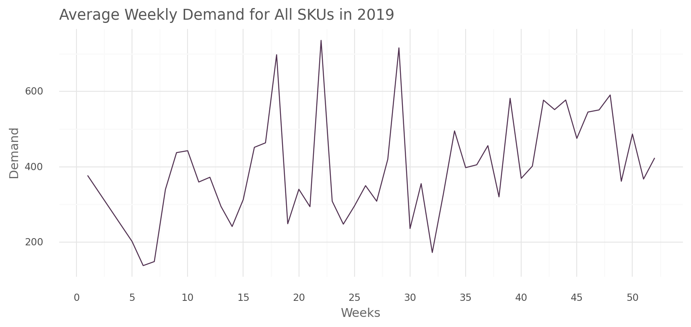
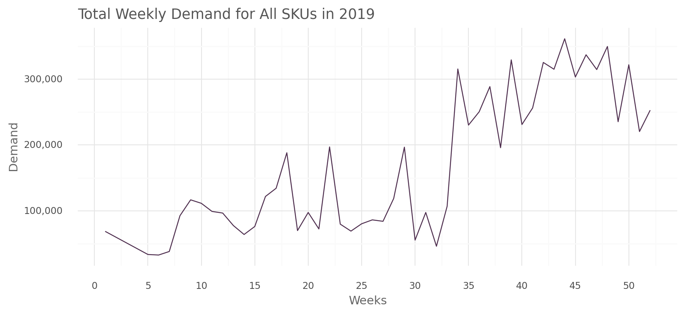
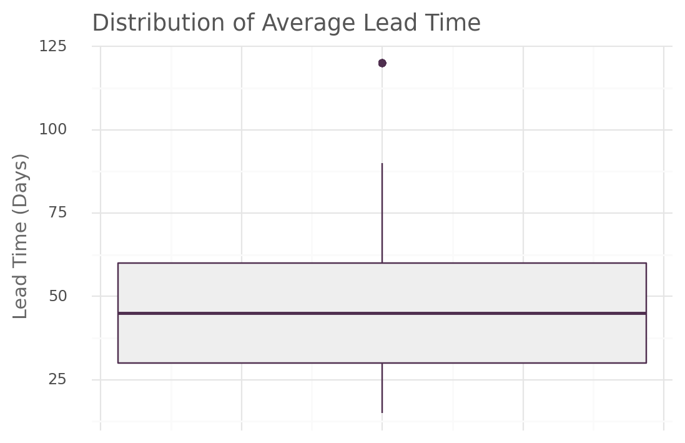
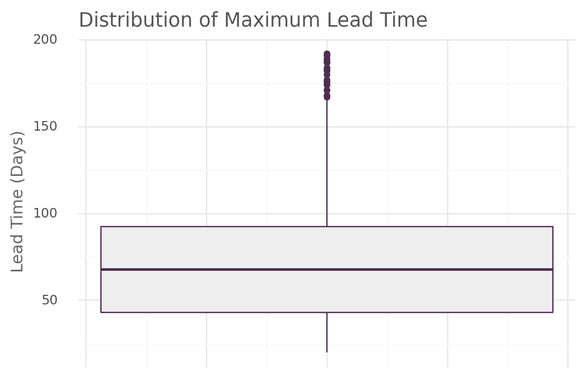
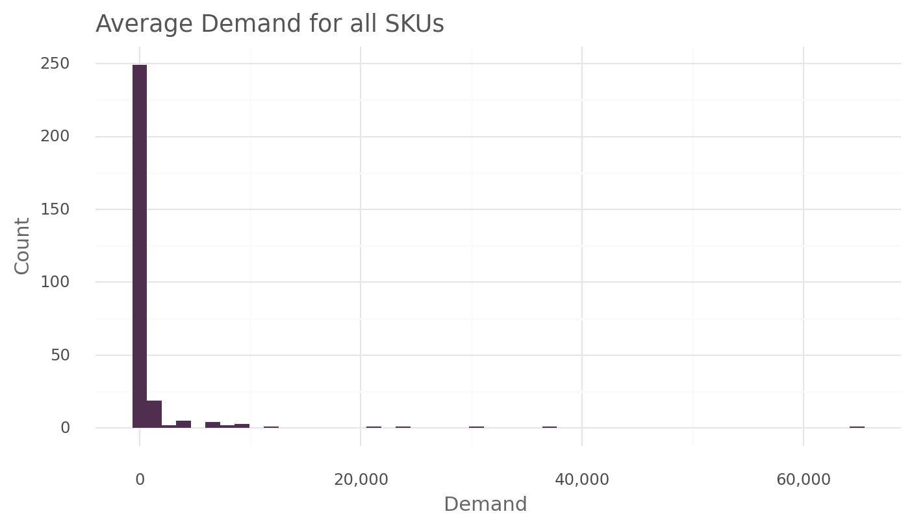
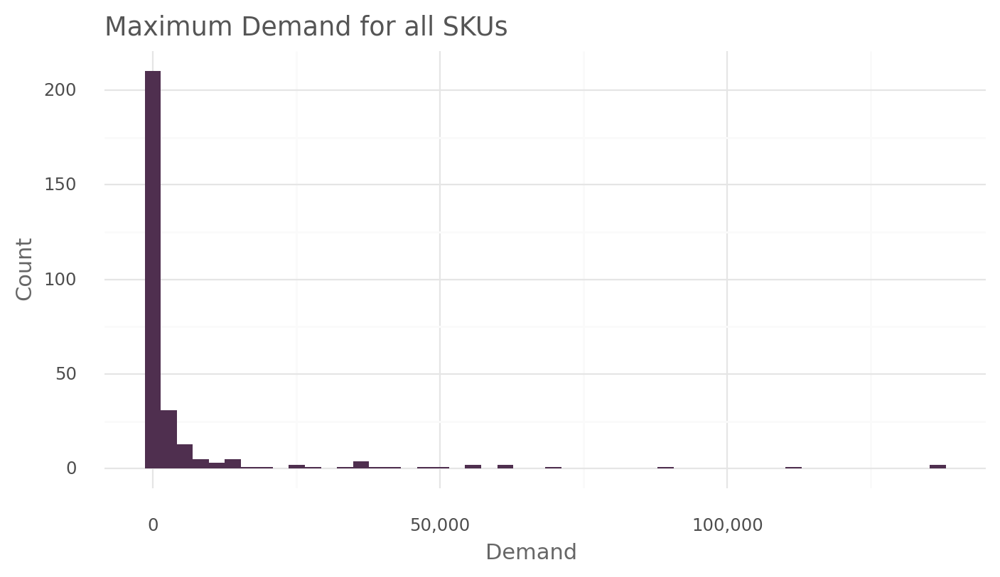
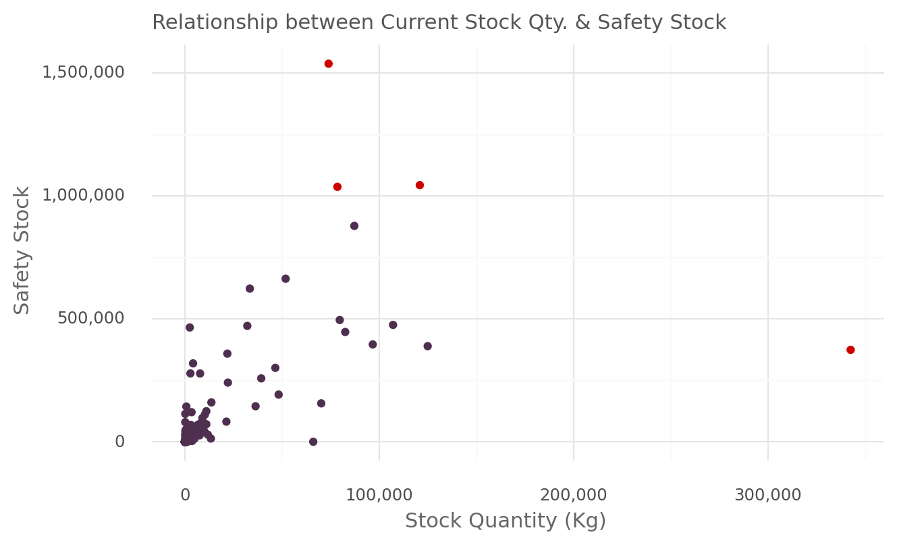
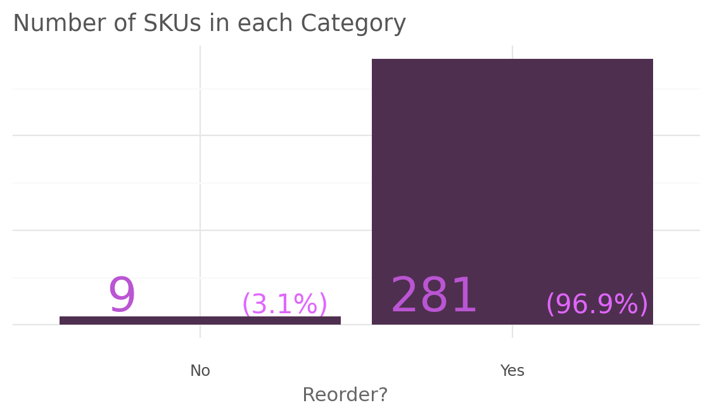
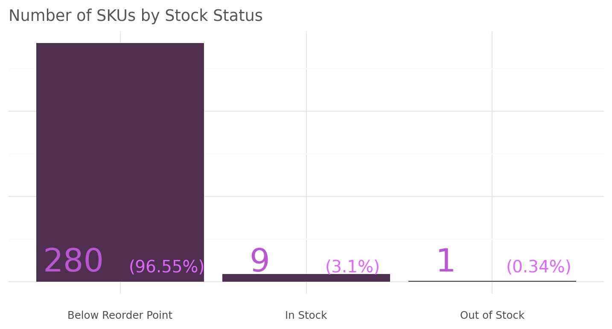

import pandas as pd
import numpy as np
import plotnine as gNumerous businesses have experienced the predicament of being unable to fulfill customer demand due to inadequate order quantities and incorrect estimations of the required ordering intervals. As a result, they have experienced a loss in sales. This highlights the critical importance of accurately calculating the reorder point for achieving business success. Hence, it becomes essential to define the reorder point.
A reorder point is a predetermined inventory level at which a new order is placed to replenish stock before it runs out completely. By accurately determining the reorder point, businesses can ensure uninterrupted product availability, minimize the risk of stockouts, and prevent loss of sales. Using python, we will perform the computation of the reorder point for a retail company.
Load the Libraries
The dataset we will be working with consists of two separate tables. one table inclueds all past customer orders, while the other table contains information about the available stock quantities for each product SKU.
past_orders = pd.read_csv("data/past_order.csv")
stock = pd.read_csv("data/stock.csv")A quick inspection of the data …
past_orders.head()| Order Date | SKU ID | Order Quantity | |
|---|---|---|---|
| 0 | 2019-11-19T00:00:00Z | 3084CA | 1.00 |
| 1 | 2019-06-30T00:00:00Z | 2621AA | 20.00 |
| 2 | 2020-04-19T00:00:00Z | 1193BA | 147.00 |
| 3 | 2020-05-21T00:00:00Z | 1971AA | 10.00 |
| 4 | 2019-03-31T00:00:00Z | 3177CA | 56.25 |
stock.head()| SKU ID | Current Stock Quantity | Units (Nos/Kg) | Average Lead Time (days) | Maximum Lead Time (days) | Unit Price | |
|---|---|---|---|---|---|---|
| 0 | 1009AA | 7210.0 | Kg | 30 | 48 | 28.76326 |
| 1 | 1077CA | 46516.0 | Kg | 45 | 70 | 22.97770 |
| 2 | 1083AA | 48210.0 | Kg | 45 | 68 | 29.02000 |
| 3 | 1116CA | 33398.0 | Kg | 90 | 140 | 32.80000 |
| 4 | 1126CA | 39270.0 | Kg | 45 | 62 | 32.80000 |
To facilitate data utilization, we will conduct a brief data cleaning process.
# (1)
past_orders.columns = ["date", "sku", "order_quantity"]
# (2)
past_orders["date"] = pd.to_datetime(past_orders["date"])
# (3)
past_orders = past_orders.sort_values(by="date", ascending=True)
# (4)
stock.columns = [
"sku", "current_stock_qty", "unit_nos_kg", "avg_lead_time_days",
"max_lead_time_days", "unit_price"
] - Update the column names of the past order dataset.
- Convert the data column from an object data type to the date format.
- Arrange the past order table in descending order, sorting from the farthest date to the most recent date.
- Update the column names of the stock dataset.
In order to accurately determine the appropriate reorder points for each product, it is crucial to ascertain the total number of SKUs that will be considered in the analysis.
past_orders["sku"].nunique()290There are a total of 290 unique SKUs. By “SKU”, which stands for “Stock Keeping Unit” we refer to a distinct indentifer assigned to a specific product or item variant.
Extrating important dates periods
past_orders = past_orders.assign(
week = past_orders["date"].dt.isocalendar().week, # (1)
year = past_orders["date"].dt.year # (2)
)- The week number within a year.
- The order year.
Weekly Demand
We will examine the average and cummulative values of the weekly demand for all SKUs. This exploration will provide insights into both the typical demand level and the overall magnitude of the weekly demand throughout the year 2019.
all_sku_summary = (
past_orders
.groupby(["year", "week"]) # (1)
.agg(
avg_demand = ("order_quantity", "mean"),
total_demand = ("order_quantity", "sum")
)
.reset_index()
)- The past order will be grouped based on the order year and order week number.
all_sku_summary_plot
def all_sku_summary_plot(df: pd.DataFrame, var: str):
plt_title = "Average" if var == "avg_demand" else "Total"
return (
g.ggplot(df.query("year == 2019"), g.aes(x="week", y=var)) +
g.geom_line(color="#4F2F4F") +
g.labs(x="Weeks",
y="Demand",
title=f"{plt_title} Weekly Demand for All SKUs in 2019") +
g.scale_x_continuous(breaks=range(0,53,5)) +
g.scale_y_continuous(labels = lambda l: ["{:,.0f}".format(v) for v in l]) +
g.theme_minimal() +
g.theme(
figure_size=(10, 4),
plot_title=g.element_text(color="#555555", ha="left"),
axis_title=g.element_text(color="#666666"),
plot_background=g.element_rect(fill="#FFFFFF", color="#FFFFFF")
)
)all_sku_summary_plot(all_sku_summary, "avg_demand")
all_sku_summary_plot(all_sku_summary, "total_demand")
The analysis of the average weekly demand reveals noticable spikes in demand during specific weeks such as the 18th, 22nd, and 29th weeks, where the demand exceeded 600 units. Additionally, after the 34th week, the demand consistently remained above 300 units, unlike the first 15 weeks.
For the total total weekly demand, we observe that demand was relatively lower for the initial 32 weeks. However, a significant surge occured from the 34th week untill the end of the year, with a demand increase of over 200,000 units. This indicate a higher volume of orders required towards the end of the year compared to the beginning.
Lead Time
Before estimating the safety stock for each SKU, let’s examine the average and maximum lead time required for product replenishment.
lead_time_plot
def lead_time_plot(df: pd.DataFrame, var: str):
plt_title = "Average" if var == "avg_lead_time_days" else "Maximum"
return (
g.ggplot(df, g.aes(x=1, y=var)) +
g.geom_boxplot(color="#4F2F4F", fill = "#EEEEEE") +
g.labs(x=None,
y="Lead Time (Days)",
title=f"Distribution of {plt_title} Lead Time") +
g.theme_minimal() +
g.theme(
figure_size=(6, 4),
plot_title=g.element_text(color="#555555", ha = "left"),
axis_title=g.element_text(color="#666666"),
axis_text_x=g.element_blank(),
plot_background=g.element_rect(fill="#FFFFFF", color="#FFFFFF")
)
)lead_time_plot(stock, "avg_lead_time_days")
lead_time_plot(stock, "max_lead_time_days")
When analyzing the average lead time for all SKUs, it is observed that 75% of the SKUs had lead times below 60 days. However, there are several other SKUs with an average lead time of 120 days and they are considered outliers.
In terms of the maximum lead time distribution, the majority (75%) of SKUs had lead time below 92 days. Nevertheless, there are some outliers with lead times exceeding 160 days. This indicate that the replenishment process can extend to durations of 160 days or even longer. Having such lengthy lead times posses significant challenges and difficulties.
Average & Maximum demand for each SKU
demand = (
past_orders
.groupby(["year", "week", "sku"])
.agg(total_demand = ("order_quantity", "sum")) # (1)
.reset_index()
.groupby(["sku"])
.agg(
avg_demand = ("total_demand", "mean"), # (2)
max_demand = ("total_demand", "max") # (3)
)
.reset_index()
)- The total demand per week for each SKUs.
- The average quantity demand.
- The maximum (peak) quantity demand.
demand.head()| sku | avg_demand | max_demand | |
|---|---|---|---|
| 0 | 1009AA | 1252.144928 | 7004.0 |
| 1 | 1077CA | 6951.169231 | 34554.0 |
| 2 | 1083AA | 6552.644068 | 24126.0 |
| 3 | 1116CA | 8518.940000 | 36617.0 |
| 4 | 1126CA | 8158.431373 | 35072.0 |
sku_demand_plot
def sku_demand_plot(df: pd.DataFrame, var: str):
plt_title = "Average" if var == "avg_demand" else "Maximum"
return (
g.ggplot(df, g.aes(x=var)) +
g.geom_histogram(bins=50, fill="#4F2F4F") +
g.labs(x="Demand", y="Count", title=f"{plt_title} Demand for all SKUs") +
g.scale_x_continuous(labels = lambda l: ["{:,.0f}".format(v) for v in l]) +
g.theme_minimal() +
g.theme(
figure_size=(8, 4),
plot_title=g.element_text(color="#555555", ha="left"),
axis_title=g.element_text(color="#666666"),
plot_background=g.element_rect(fill="#FFFFFF", color="#FFFFFF")
)
)sku_demand_table
def sku_demand_table(df: pd.DataFrame, var: str):
return (
df[var]
.describe()
.reset_index()
.rename(columns={"index": "stats"})
.query("stats != 'count'")
.style.format(formatter='{:,.2f}', subset=var, precision=1)
)sku_demand_plot(demand, "avg_demand")
sku_demand_table(demand, "avg_demand")| stats | avg_demand | |
|---|---|---|
| 1 | mean | 1,137.46 |
| 2 | std | 5,244.68 |
| 3 | min | 1.11 |
| 4 | 25% | 10.68 |
| 5 | 50% | 22.86 |
| 6 | 75% | 249.00 |
| 7 | max | 64,868.21 |
sku_demand_plot(demand, "max_demand")
sku_demand_table(demand, "max_demand")| stats | max_demand | |
|---|---|---|
| 1 | mean | 5,417.22 |
| 2 | std | 17,286.52 |
| 3 | min | 2.00 |
| 4 | 25% | 47.17 |
| 5 | 50% | 206.50 |
| 6 | 75% | 1,706.50 |
| 7 | max | 136,634.40 |
Safety Stock
Safety stock, also known as buffer stock, refers to the additional inventory held beyond the expected demand during the lead time. it acts as a cushion to account for uncertainties in demand, supply chain disruptions, or unexpected variations in lead time.
The formula for calculating safety stock using the maximum and average weekly demand is as follows:
Safety stock= (max_unit_week x max_lead_time_replenish ) — (avg_weekly_demand x avg_lead_time_weeks)
Where:
max_unit_week = Maximum number of units demand in a week.
max_lead_time_replenish = Maximum lead time for stock replenishment.
avg_weekly_demand = Average weekly usage.
avg_lead_time_weeks = Average lead time in a week.
inventory = (
demand
.merge(stock, how="left", on="sku") # (1)
.assign(
avg_lead_time_weeks = lambda _: _["avg_lead_time_days"] / 7, # (2)
max_lead_time_weeks = lambda _: _["max_lead_time_days"] / 7, # (3)
max_stock_depletion = lambda _: _["max_demand"] * _["max_lead_time_weeks"], # (4)
avg_safety_stock = lambda _: _["avg_demand"] * _["avg_lead_time_weeks"], # (5)
safety_stock = lambda _: _["max_stock_depletion"] - _["avg_safety_stock"]
)
)- Join the demand table and stock table using the
skuvariable. - The average weekly replenishment lead time.
- The maximum weekly replenishment lead time.
- Maximum stock depletion during lead time.
- Average safety stock for lead time.
col_list = [
"sku", "current_stock_qty", "unit_price",
"max_demand", "avg_demand",
"avg_lead_time_weeks", "max_lead_time_weeks",
"max_stock_depletion", "avg_safety_stock", "safety_stock"
]
inventory = inventory[col_list]
inventory[[
"sku", "max_stock_depletion", "avg_safety_stock", "safety_stock"
]].head()| sku | max_stock_depletion | avg_safety_stock | safety_stock | |
|---|---|---|---|---|
| 0 | 1009AA | 48027.428571 | 5366.335404 | 42661.093168 |
| 1 | 1077CA | 345540.000000 | 44686.087912 | 300853.912088 |
| 2 | 1083AA | 234366.857143 | 42124.140436 | 192242.716707 |
| 3 | 1116CA | 732340.000000 | 109529.228571 | 622810.771429 |
| 4 | 1126CA | 310637.714286 | 52447.058824 | 258190.655462 |
current_vs_safety table
current_vs_safety = (
inventory[["current_stock_qty", "safety_stock"]]
.assign(
fill_color = lambda _: np.where(
_["safety_stock"] > 1000000, "red",
np.where(
_["current_stock_qty"] > 200000, "red", "purple"
)
)
)
)Relationship plot Code
(
g.ggplot(current_vs_safety, g.aes(x="current_stock_qty", y="safety_stock")) +
g.geom_point(g.aes(color = "fill_color"), show_legend=False) +
g.scale_y_continuous(labels = lambda l: ["{:,.0f}".format(v) for v in l]) +
g.scale_x_continuous(labels = lambda l: ["{:,.0f}".format(v) for v in l]) +
g.scale_color_manual(values = {"red": "#CD0000", "purple" : "#4F2F4F"}) +
g.labs(x="Stock Quantity (Kg)",
y="Safety Stock",
title="Relationship between Current Stock Qty. & Safety Stock") +
g.theme_minimal() +
g.theme(
figure_size=(7, 4),
plot_title=g.element_text(color="#555555", ha = "left", size=11),
axis_title=g.element_text(color="#666666"),
plot_background=g.element_rect(fill="#FFFFFF", color="#FFFFFF")
)
)
The plot above reveals the expected positive relationship between the current stock quantity and safety stock. However, there are a few notable outliers in this relationship. Some SKUs exhibit a high current stock quantity of over 300,000 units but have a relatively lower safety stock level of less tha 500,000 units. Conversely, certain SKUs have a safety stock of over 1.5million Kg while having a lower current stock quantity of less than 100,000 Kgs
Reorder Point
Reorder point is determined based on factors such as lead time, demand variability, and desired service level. It is calculated by considering the average weekly demand, lead time, and safety stock.
When the inventory level reached or falls below the reorder point, it triggers the placement of a new order to replenish the stock.
The formula for calculating reorder point is as follows:
Reorder point= (avg_units_used x avg_week_lead_time) + safety_stock_units
Where: avg_units_used = Average demand of units weekly.
avg_week_lead_time = Average of week lead time.
inventory = (
inventory
.assign(
qty_unit_sold = (inventory["avg_demand"] * inventory["avg_lead_time_weeks"]), # (1)
reorder_point = lambda _: _["safety_stock"] + _["qty_unit_sold"], # (2)
need_to_reorder = lambda _: np.where( # (3)
_["reorder_point"] > _["current_stock_qty"], "Yes", "No"
)
)
)- The total quantity of units that would be sold during the lead time.
- Product reorder point.
- Whether there is a need to replenish stock or not.
The safety stock here acts as buffer or cushion to account for uncertainties, variations in demand, and other factors that may affect the availability of stock during the lead time. In other words it ensures that there is enough stock on hand to avoid stockout and meet customer demand even in unexpected situations.
inventory[[
"sku", "safety_stock", "qty_unit_sold",
"reorder_point", "need_to_reorder"
]].head()| sku | safety_stock | qty_unit_sold | reorder_point | need_to_reorder | |
|---|---|---|---|---|---|
| 0 | 1009AA | 42661.093168 | 5366.335404 | 48027.428571 | Yes |
| 1 | 1077CA | 300853.912088 | 44686.087912 | 345540.000000 | Yes |
| 2 | 1083AA | 192242.716707 | 42124.140436 | 234366.857143 | Yes |
| 3 | 1116CA | 622810.771429 | 109529.228571 | 732340.000000 | Yes |
| 4 | 1126CA | 258190.655462 | 52447.058824 | 310637.714286 | Yes |
need_reorder = (
inventory["need_to_reorder"]
.value_counts()
.reset_index()
.rename(columns= {"index": "need_to_reorder", "need_to_reorder": "count"})
.assign(
percentage = lambda _: round((_["count"] / _["count"].sum()) * 100, 2)
)
)Need to reorder plot code
(
g.ggplot(need_reorder, g.aes(x="need_to_reorder", y="count")) +
g.geom_col(fill="#4F2F4F") +
g.geom_text(
g.aes(label="count", y=4),
position=g.position_dodge(width=.9),
nudge_x=-0.25,
size=27,
color="#BA55D3",
va="bottom"
) +
g.geom_text(
g.aes(label = "percentage", y=7),
position=g.position_dodge(width=.9),
nudge_x=0.27,
size=15,
va="bottom",
color="#E066FF",
format_string="({}%)"
) +
g.labs(x="Reorder?", y=None, title="Number of SKUs in each Category") +
g.theme_minimal() +
g.theme(
figure_size=(7, 3),
plot_title=g.element_text(color="#555555", ha = "left"),
axis_title_x=g.element_text(color="#666666"),
axis_text_y=g.element_blank(),
plot_background=g.element_rect(fill="#FFFFFF", color="#FFFFFF")
)
)
Based on the bar chart, it is evident that approximately 281 SKUs, which accounts for 96.9% of the total, require replenishment. Conversely, only 9 SKUs (3.1%) do not require replenishment. This indicate that majority of SKUs in the inventory, almost all except for a small minority, are in need of restocking.
Stock Status
To ensure precise categorization of each SKU, it is necessary to extract the current stock status.
inventory = (
inventory.
assign(
stock_status = lambda _: np.where( # (1)
_["current_stock_qty"] == 0, "Out of Stock", np.where( # (2)
_["need_to_reorder"] == "Yes", "Below Reorder Point", "In Stock"
)
)
)
)- Category of SKUs that a currently not available.
- Category of SKUs below the reorder point and SKUs currently in stock.
inventory[
["sku", "safety_stock", "reorder_point", "need_to_reorder", "stock_status"]
].head()| sku | safety_stock | reorder_point | need_to_reorder | stock_status | |
|---|---|---|---|---|---|
| 0 | 1009AA | 42661.093168 | 48027.428571 | Yes | Below Reorder Point |
| 1 | 1077CA | 300853.912088 | 345540.000000 | Yes | Below Reorder Point |
| 2 | 1083AA | 192242.716707 | 234366.857143 | Yes | Below Reorder Point |
| 3 | 1116CA | 622810.771429 | 732340.000000 | Yes | Below Reorder Point |
| 4 | 1126CA | 258190.655462 | 310637.714286 | Yes | Below Reorder Point |
stock_status = (
inventory["stock_status"]
.value_counts()
.reset_index()
.rename(columns= {"index": "stock_status", "stock_status": "count"})
.assign(
percentage = lambda _: round((_["count"] / _["count"].sum()) * 100, 2)
)
)Stock status plot code
(
g.ggplot(stock_status, g.aes(x="stock_status", y="count")) +
g.geom_col(fill="#4F2F4F") +
g.geom_text(
g.aes(label="count", y=4),
position=g.position_dodge(width=.9),
nudge_x=-0.25,
size=27,
color="#BA55D3",
va="bottom"
) +
g.geom_text(
g.aes(label = "percentage", y=7),
position=g.position_dodge(width=.9),
nudge_x=0.25,
size=14,
va="bottom",
color="#E066FF",
format_string="({}%)"
) +
g.labs(x=None, y=None, title = "Number of SKUs by Stock Status") +
g.theme_minimal() +
g.theme(
figure_size=(9, 4),
plot_title=g.element_text(color="#555555", ha = "left"),
axis_title_x=g.element_text(color="#666666"),
axis_text_y=g.element_blank(),
plot_background=g.element_rect(fill="#FFFFFF", color="#FFFFFF")
)
)
The analysis reveals that a significant majority of SKUs (approximately 96.55%) were currently below the reorder point, indicating a potential risk of stockouts. Only 3.1% of SKUs were found to be in stock and remarkably, only one SKU was out of stock.
This finding highlights the need for imporvement in inventory management to ensure a higher percentage of SKUs are maintained above the reorder point and readily available for customers.
Benefits Of Accurate Reorder Points
- It ensures optimal inventory level by replenishing stock at the right time.
- Improved customer satisfaction by ensuring that products are consistently available to meet customer demand.Therefore customer can rely on the business to fulfill orders promptly and consistently.
- Accurate reorder points can help businesses avoid excess inventory, thereby reducing storage costs, minimize the risk of obsolescence, and optimize their working capital.
- Efficient supply chain management can be achieved by streamlining the flow of goods, optimize procument processes, and maintain strong relationship with suppliers. This can imporve lead times and better coordination throughout the supply chain.
- It enhance business agility by enabling quick adjustments to inventory levels in response to changes in market demand, customer preferences, or unexpected events.